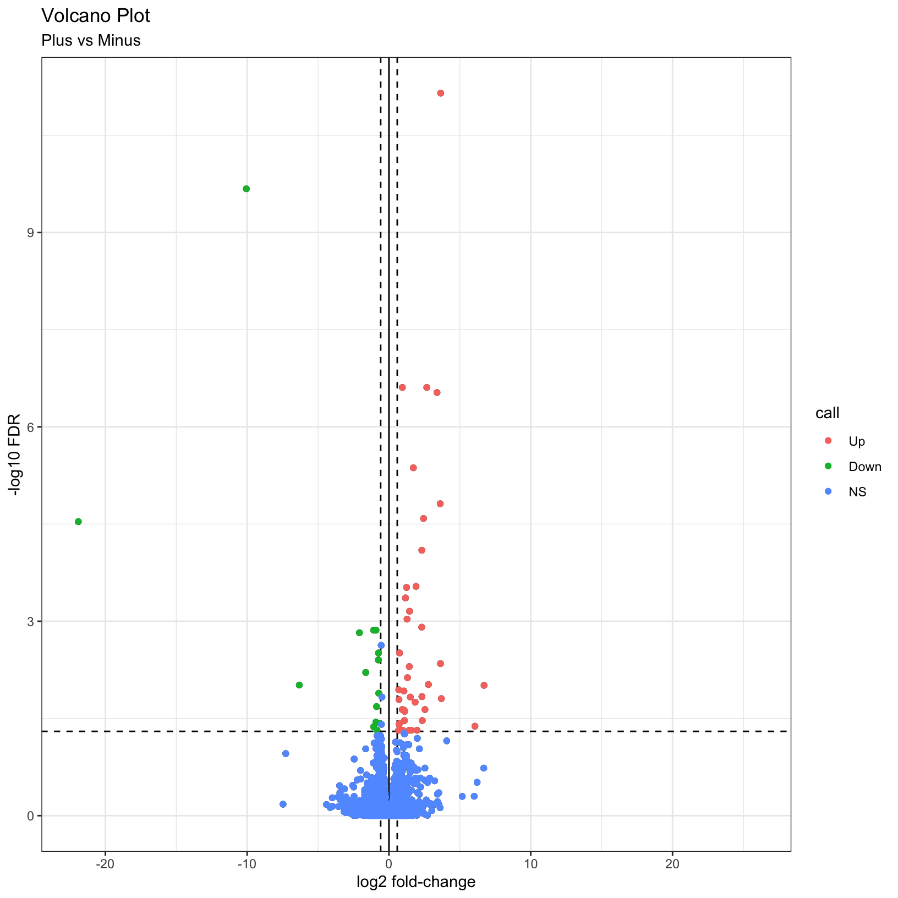

Module 11: DE Visualizations and Annotation
UM Bioinformatics Core
2022-10-20
Objectives
- Understand advantages of using gene ids when analyzing data.
- Given a list of ENSEMBL gene ids, add gene symbols and Entrez accessions.
- Generate common visualizations for differential expression comparisons
- Understand choosing thresholds for calling differentially expressed genes
- Discuss options for functional enrichments
Differential Expression Workflow
Here we will generate summary figures for our results and annotate our DE tables.

Summarizing DE results
Part of differential expression analysis is generating visualizations and summaries to share our results. While the DESeq2 tutorial provides examples of other visualizations, a common visualization to summarize DE comparisons are volcano plots.
Tabular DE summary
To summarize DE genes, we first need thresholds for determining significance. A reasonable threshold for linear fold-change is less than -1.5 or greater than 1.5 (which corresponds to log2 fold-change -0.585 and 0.585, respectively. A standard threshold for the adjusted p-value is less than 0.05.
Let’s set these as variables to reuse. This is generally good practice because if these thresholds change upon later consideration, you only have to change them in one location of your script, which will reduce errors from missing some instances in your code.
fc = 1.5
fdr = 0.05Note: Choosing thresholds
Thresholding on adjusted p-values < 0.05 is a standard threshold, but depending on the research question and/or how the results will be used, other thresholds might be reasonable.
There is a nice Biostar post that discusses choosing adjusted p-value thresholds, including cases where a more relaxed threshold might be appropriate and (some heated) discussion of the dangers of adjusting the choosen threshold after running an analysis. Additionally, there is a Dalmon et al 2012 paper about p-value and fold-change thresholds for microarray data that may help provide some context.
To generate a general summary of the DE results, we can use the
summary function to generate a basic summary by DESeq2.
summary(results_plus_vs_minus)
out of 16249 with nonzero total read count
adjusted p-value < 0.1
LFC > 0 (up) : 38, 0.23%
LFC < 0 (down) : 53, 0.33%
outliers [1] : 72, 0.44%
low counts [2] : 3781, 23%
(mean count < 7)
[1] see 'cooksCutoff' argument of ?results
[2] see 'independentFiltering' argument of ?resultsHowever, this summary is simply a text output that we are unable to manipulate. Moreover, notice that the thresholds are not quite as we would like them.
We can use conditional statements to determine the number of genes that pass our thresholds for each comparison, which we can then use to add information to the results table and plots.
Exercise
How would we identify the number of genes with adjusted p-values < 0.05 and a fold-change above 1.5 (or below -1.5)?
Solution
Here is one possible answer:
sum(results_plus_vs_minus$padj < fdr & abs(results_plus_vs_minus$log2FoldChange) >= log2(fc), na.rm = TRUE)[1] 56Let’s now create a new column in results_plus_vs_minus
to record the significance “call” based on these thresholds. And let’s
separate the call by “Up” or “Down”, noting that these are relative to
our “Case” condition of “plus”, or iron replete mice. There are many
ways to accomplish this, but the following will work:
First define all values as “NS” or “not significant”:
results_plus_vs_minus$call = 'NS'
head(results_plus_vs_minus)log2 fold change (MLE): condition plus vs minus
Wald test p-value: condition plus vs minus
DataFrame with 6 rows and 7 columns
baseMean log2FoldChange lfcSE stat pvalue
<numeric> <numeric> <numeric> <numeric> <numeric>
ENSMUSG00000000001 1489.83039 -0.297760 0.210310 -1.415813 0.156830
ENSMUSG00000000028 1748.93544 -0.226421 0.176795 -1.280693 0.200302
ENSMUSG00000000031 2151.87715 -0.457628 0.764579 -0.598537 0.549482
ENSMUSG00000000037 24.91672 -0.579128 0.561259 -1.031837 0.302148
ENSMUSG00000000049 7.78377 0.899490 1.553062 0.579172 0.562473
ENSMUSG00000000056 19653.54030 0.174048 0.203529 0.855154 0.392466
padj call
<numeric> <character>
ENSMUSG00000000001 0.868577 NS
ENSMUSG00000000028 0.902896 NS
ENSMUSG00000000031 0.995389 NS
ENSMUSG00000000037 0.950617 NS
ENSMUSG00000000049 0.998037 NS
ENSMUSG00000000056 0.982477 NSNext, determine the “Up” and “Down” indices:
up_idx = results_plus_vs_minus$padj < fdr & results_plus_vs_minus$log2FoldChange > log2(fc)
down_idx = results_plus_vs_minus$padj < fdr & results_plus_vs_minus$log2FoldChange < -log2(fc)Last, use those indices to assign the correct “Up” or “Down” values to the correct indices, and look at the head of the result:
results_plus_vs_minus$call[up_idx] = 'Up'
results_plus_vs_minus$call[down_idx] = 'Down'
head(results_plus_vs_minus)log2 fold change (MLE): condition plus vs minus
Wald test p-value: condition plus vs minus
DataFrame with 6 rows and 7 columns
baseMean log2FoldChange lfcSE stat pvalue
<numeric> <numeric> <numeric> <numeric> <numeric>
ENSMUSG00000000001 1489.83039 -0.297760 0.210310 -1.415813 0.156830
ENSMUSG00000000028 1748.93544 -0.226421 0.176795 -1.280693 0.200302
ENSMUSG00000000031 2151.87715 -0.457628 0.764579 -0.598537 0.549482
ENSMUSG00000000037 24.91672 -0.579128 0.561259 -1.031837 0.302148
ENSMUSG00000000049 7.78377 0.899490 1.553062 0.579172 0.562473
ENSMUSG00000000056 19653.54030 0.174048 0.203529 0.855154 0.392466
padj call
<numeric> <character>
ENSMUSG00000000001 0.868577 NS
ENSMUSG00000000028 0.902896 NS
ENSMUSG00000000031 0.995389 NS
ENSMUSG00000000037 0.950617 NS
ENSMUSG00000000049 0.998037 NS
ENSMUSG00000000056 0.982477 NSFinally, looking ahead to when we plot these values as colors in a
volcano plot, let’s make this call column a factor and
specify the level ordering:
results_plus_vs_minus$call = factor(results_plus_vs_minus$call, levels = c('Up', 'Down', 'NS'))
head(results_plus_vs_minus)log2 fold change (MLE): condition plus vs minus
Wald test p-value: condition plus vs minus
DataFrame with 6 rows and 7 columns
baseMean log2FoldChange lfcSE stat pvalue
<numeric> <numeric> <numeric> <numeric> <numeric>
ENSMUSG00000000001 1489.83039 -0.297760 0.210310 -1.415813 0.156830
ENSMUSG00000000028 1748.93544 -0.226421 0.176795 -1.280693 0.200302
ENSMUSG00000000031 2151.87715 -0.457628 0.764579 -0.598537 0.549482
ENSMUSG00000000037 24.91672 -0.579128 0.561259 -1.031837 0.302148
ENSMUSG00000000049 7.78377 0.899490 1.553062 0.579172 0.562473
ENSMUSG00000000056 19653.54030 0.174048 0.203529 0.855154 0.392466
padj call
<numeric> <factor>
ENSMUSG00000000001 0.868577 NS
ENSMUSG00000000028 0.902896 NS
ENSMUSG00000000031 0.995389 NS
ENSMUSG00000000037 0.950617 NS
ENSMUSG00000000049 0.998037 NS
ENSMUSG00000000056 0.982477 NSTip
It is often helpful to include code like this in differential expression analyses so there is a clearly labelled column that makes subsetting and summarizing the results easier.
Now we are in a position to quickly summarize our differential expression results:
table(results_plus_vs_minus$call)
Up Down NS
15 41 16193 We see quickly how many genes were “Up” in iron replete, how many were “Down” in iron replete, and how many were not significant.
Checkpoint: If you successfully added the
call column and got the same table result as above, please
indicate with a green check. Otherwise use a red x.
Visual DE summary
As described by this Galaxy project tutorial, a volcano plot is a type of scatterplot that shows statistical significance (adjusted p-value) versus magnitude of change (fold change). In a volcano plot, the most upregulated genes are towards the right, the most downregulated genes are towards the left, and the most statistically significant genes are towards the top.
Let’s coerce the DataFrame which was returned by
DESeq2::results() into a tibble in
anticipation of using the ggplot2 library to plot. We’re
also going to modify our results table so that the row names become a
separate column, and so that it’s ordered by adjusted p-value.
# Use the rownames argument to create a new column of gene IDs
# Also arrange by adjusted p-value
results_plus_vs_minus = as_tibble(results_plus_vs_minus, rownames = 'id') %>% arrange(padj)Let’s start with a very simple volcano plot that plots the
log2FoldChange on the x-axis, and -log10(padj)
on the y-axis.
# Initialize the plot, saving as object 'p' and specifying the plot type as 'geom_point'
p = ggplot(results_plus_vs_minus, aes(x = log2FoldChange, y = -log10(padj))) +
geom_point()
pWarning: Removed 3853 rows containing missing values (geom_point).
This is a good start, but, as usual it’s nice to add better labels to
the plot with the labs() function:
# Add plot labels and change the theme
p = ggplot(results_plus_vs_minus, aes(x = log2FoldChange, y = -log10(padj))) +
geom_point() +
theme_bw() +
labs(
title = 'Volcano Plot',
subtitle = 'Plus vs Minus',
x = 'log2 fold-change',
y = '-log10 FDR'
)
pWarning: Removed 3853 rows containing missing values (geom_point).
This is a nice improvement. What if we now added some visual guides
to indicate where the significant genes are? We can uset he
geom_vline() and geom_hline() functions to
accomplish this:
# Add threshold lines
p = p +
geom_vline(
xintercept = c(0, -log2(fc), log2(fc)),
linetype = c(1, 2, 2)) +
geom_hline(
yintercept = -log10(fdr),
linetype = 2)
pWarning: Removed 3853 rows containing missing values (geom_point).
Finally, why not color the points by their significance status? We
already created the call column that has the correct
values. In this case we can get away with adding a last
geom_point() and specifying the correct aesthetic:
p = p + geom_point(aes(color = call))
pWarning: Removed 3853 rows containing missing values (geom_point).
Removed 3853 rows containing missing values (geom_point).
For additional visualizations for our DE results, we included some example code in the Bonus Content module and this HBC tutorial includes some nice examples.
Subsetting significant genes
You may be interested in identifying only the genes that pass your
significance thresholds. A useful way to do this is to conditionally
subset your results. Again, we already created the call
column, which makes this relatively simple to do.
Note: The tidyverse functions you learned in Software Carpentry could also be alternatively used here.
res_sig = results_plus_vs_minus[results_plus_vs_minus$call != 'NS', ]
head(res_sig)# A tibble: 6 × 8
id baseMean log2FoldChange lfcSE stat pvalue padj call
<chr> <dbl> <dbl> <dbl> <dbl> <dbl> <dbl> <fct>
1 ENSMUSG000000… 1178. -3.64 0.450 -8.10 5.72e-16 7.08e-12 Down
2 ENSMUSG000001… 77.3 10.1 1.33 7.58 3.42e-14 2.12e-10 Up
3 ENSMUSG000000… 243. -2.67 0.410 -6.50 7.96e-11 2.47e- 7 Down
4 ENSMUSG000000… 3250. -0.946 0.145 -6.52 7.00e-11 2.47e- 7 Down
5 ENSMUSG000000… 92.6 -3.39 0.526 -6.44 1.19e-10 2.95e- 7 Down
6 ENSMUSG000000… 625. -1.72 0.287 -5.99 2.07e- 9 4.28e- 6 Down dim(res_sig)[1] 56 8Adding genome annotations
Since, gene symbols can change over time or be ambiguous we use, and recommend, using the EMSEMBL reference genome and ENSEMBL IDs for alignments and we’ve been working with tables and data where all genes are labeled only by their long ENSEMBL ID (you will notice this in the GTF we used in the reference). However, this can make it difficult to quickly look at results for genes of interest.
Luckily, Bioconductor provides many tools and resources to facilitate access to genomic annotation resources.
To start, we will first load the biomaRt library and choose what reference we want to access. For a more detailed walk through of using biomaRt, this training module might be useful, including what to do when annotations are not 1:1 mappings.
Breakout Exercise 2 - Adding gene symbol annotations
Navigate to this page, where we will begin our second breakout exercise together, and then split into smaller groups to finish it.
Outputting results to file
A key aspect of our analysis is preserving the relevant datasets for both our records and for downstream applications, such as functional enrichments.
DE results table
Next we’ll write out our DE results, now that we’ve added information to the table to help us interpret the results, and share with collaborators.
write.csv(results_plus_vs_minus,
row.names = FALSE,
na = ".",
file="outputs/tables/DE_results_plus_vs_minus.csv")Count tables
The most relevant count tables are the raw, filtered count table that we used as the input for our analysis and the rlog normalized count table that we used for our quality control visualizations.
To output the raw counts, we will need to use the counts
function to access the count table from within its larger
DESeqDataSet object.
write.csv(counts(dds, normalized = FALSE), file="outputs/tables/DESeq2_raw_counts.csv")Then we’ll output the rlog count table, using the assay
function to access the normalized count table from within its larger
DESeqDataSet object.
write.csv(assay(rld), file="outputs/tables/DESeq2_rlog_normalized_counts.csv")Summary
In this section, we:
- Generated a volcano plot for our differential expression results
- Summarized our differential expression results
- Discussed choosing thresholds
- Annotated our tables of results to map gene IDs to gene symbols
- Saved our results to file
Key takeaways
Overall, we’ve run through most of the building blocks needed to run a differential expression analysis and hopefully built up a better understanding of how differential expression comparisons work, particularly how experimental design can impact our results.
What to consider moving forward:
- How can I control for technical variation in my experimental design?
- How much variation is expected with a treatment group?
- What is my RNA quality, and how can that be optimized?
- Are there quality concerns for my sequencing data?
- What comparisons are relevant to my biological question?
- Are there covariates that should be considered?
- What will a differential expression analysis tell me?
Let’s pause here for general questions
What can we do with our DE results?
Now that we have our DE results, have we address the biological question relevant to the authors of the original paper? On the one hand, yes - we now have two tables of genes that are impacted by change in Mov10 expression. But with two lists of genes alone, it can be difficult to find patterns or understand broader biological impacts.
What if we wanted to find out what genes were signifant in
both comparisons? The intersect function, such as
implimented as part
of the dplyr package would be useful to identify shared significant
genes. A venn
diagram could be a way to visualize these overlaps.
A way to determine possible broader biological interpretations from the observed DE results, is functional enrichments. There are many options, such as some included in this discussion thread. Other common functional enrichments approaches are gene set enrichment analysis, aka GSEA, Database for Annotation, Visualization and Integrated Discovery, aka DAVID, Ingenity, and [iPathway Guide]
The University of Michigan has license and support for additional tools, such as Cytoscape, so we recommend reaching out to staff with Taubman Library to learn more about resources that might be application toyour research.
Sources
- HBC DGE training module, part 1: https://hbctraining.github.io/DGE_workshop/lessons/04_DGE_DESeq2_analysis.html
- HBC DGE training module, part 2: https://hbctraining.github.io/DGE_workshop/lessons/05_DGE_DESeq2_analysis2.html
- DESeq2 vignette: http://bioconductor.org/packages/devel/bioc/vignettes/DESeq2/inst/doc/DESeq2.html#differential-expression-analysis
- Bioconductor Genomic Annotation resources: http://bioconductor.org/packages/devel/workflows/vignettes/annotation/inst/doc/Annotation_Resources.html
- BioMart vignette: https://bioconductor.org/packages/release/bioc/vignettes/biomaRt/inst/doc/accessing_ensembl.html
Additional Resources
- MIDAS Reproduciblity Hub: https://midas.umich.edu/reproducibility-overview/
- ARC resources: https://arc-ts.umich.edu/
- Gene Set Enrichment Resources from Bioconductor: https://bioinformatics-core-shared-training.github.io/cruk-summer-school-2018/RNASeq2018/html/06_Gene_set_testing.nb.html
- Using HTSeq data with DESeq2: https://angus.readthedocs.io/en/2019/diff-ex-and-viz.html
- Detailed RNA-seq analysis paper: https://www.ncbi.nlm.nih.gov/pmc/articles/PMC6096346/
- Overview of RNA-seq analysis considerations: https://academic-oup-com.proxy.lib.umich.edu/bfg/article/14/2/130/257370
- Alternative overview of DESeq2, including visualizations and functional enrichments: http://dputhier.github.io/jgb71e-polytech-bioinfo-app/practical/rna-seq_R/rnaseq_diff_Snf2.html
Session Info
sessionInfo()R version 4.2.1 (2022-06-23)
Platform: x86_64-apple-darwin17.0 (64-bit)
Running under: macOS Monterey 12.5.1
Matrix products: default
LAPACK: /Library/Frameworks/R.framework/Versions/4.2/Resources/lib/libRlapack.dylib
locale:
[1] en_US.UTF-8/en_US.UTF-8/en_US.UTF-8/C/en_US.UTF-8/en_US.UTF-8
attached base packages:
[1] stats4 stats graphics grDevices utils datasets methods
[8] base
other attached packages:
[1] biomaRt_2.52.0 data.table_1.14.2
[3] RColorBrewer_1.1-3 pheatmap_1.0.12
[5] ggrepel_0.9.1 dplyr_1.0.9
[7] tidyr_1.2.0 ggplot2_3.3.6
[9] DESeq2_1.36.0 SummarizedExperiment_1.26.1
[11] Biobase_2.56.0 MatrixGenerics_1.8.1
[13] matrixStats_0.62.0 GenomicRanges_1.48.0
[15] GenomeInfoDb_1.32.1 IRanges_2.30.0
[17] S4Vectors_0.34.0 BiocGenerics_0.42.0
[19] knitr_1.39 rmarkdown_2.14
loaded via a namespace (and not attached):
[1] bitops_1.0-7 bit64_4.0.5 filelock_1.0.2
[4] progress_1.2.2 httr_1.4.3 tools_4.2.1
[7] bslib_0.3.1 utf8_1.2.2 R6_2.5.1
[10] DBI_1.1.3 colorspace_2.0-3 withr_2.5.0
[13] tidyselect_1.1.2 prettyunits_1.1.1 curl_4.3.2
[16] bit_4.0.4 compiler_4.2.1 cli_3.3.0
[19] xml2_1.3.3 DelayedArray_0.22.0 labeling_0.4.2
[22] sass_0.4.1 scales_1.2.0 genefilter_1.78.0
[25] rappdirs_0.3.3 stringr_1.4.0 digest_0.6.29
[28] XVector_0.36.0 pkgconfig_2.0.3 htmltools_0.5.2
[31] dbplyr_2.2.1 fastmap_1.1.0 highr_0.9
[34] rlang_1.0.2 rstudioapi_0.13 RSQLite_2.2.14
[37] jquerylib_0.1.4 generics_0.1.2 farver_2.1.0
[40] jsonlite_1.8.0 BiocParallel_1.30.3 RCurl_1.98-1.6
[43] magrittr_2.0.3 GenomeInfoDbData_1.2.8 Matrix_1.4-1
[46] Rcpp_1.0.8.3 munsell_0.5.0 fansi_1.0.3
[49] lifecycle_1.0.1 stringi_1.7.6 yaml_2.3.5
[52] zlibbioc_1.16.0 BiocFileCache_2.4.0 grid_4.2.1
[55] blob_1.2.3 parallel_4.2.1 crayon_1.5.1
[58] lattice_0.20-45 Biostrings_2.64.0 splines_4.2.1
[61] annotate_1.48.0 hms_1.1.1 locfit_1.5-9.6
[64] pillar_1.7.0 geneplotter_1.74.0 codetools_0.2-18
[67] XML_3.99-0.10 glue_1.6.2 evaluate_0.15
[70] vctrs_0.4.1 gtable_0.3.0 purrr_0.3.4
[73] assertthat_0.2.1 cachem_1.0.6 xfun_0.31
[76] xtable_1.8-4 survival_3.3-1 tibble_3.1.7
[79] AnnotationDbi_1.32.3 memoise_2.0.1 ellipsis_0.3.2 These materials have been adapted and extended from materials listed above. These are open access materials distributed under the terms of the Creative Commons Attribution license (CC BY 4.0), which permits unrestricted use, distribution, and reproduction in any medium, provided the original author and source are credited.